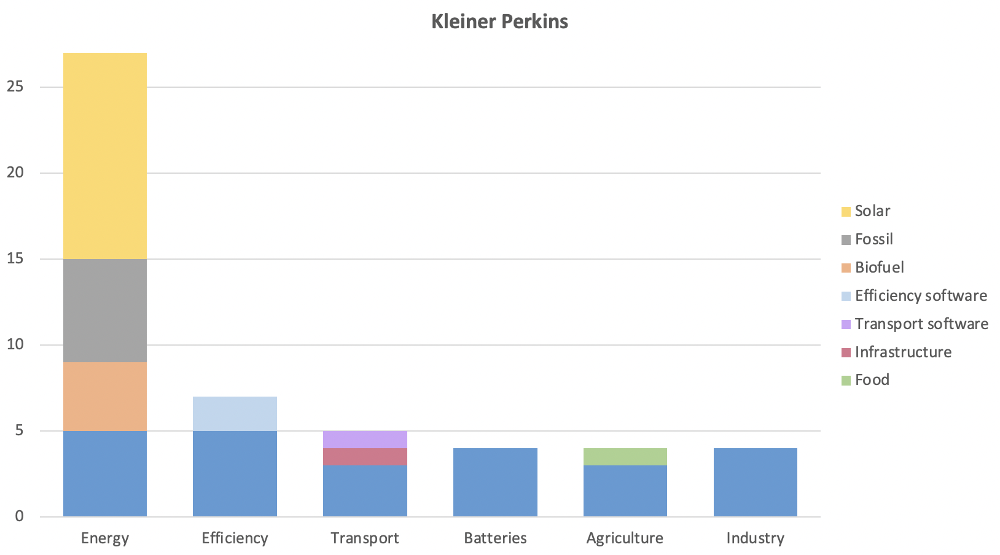
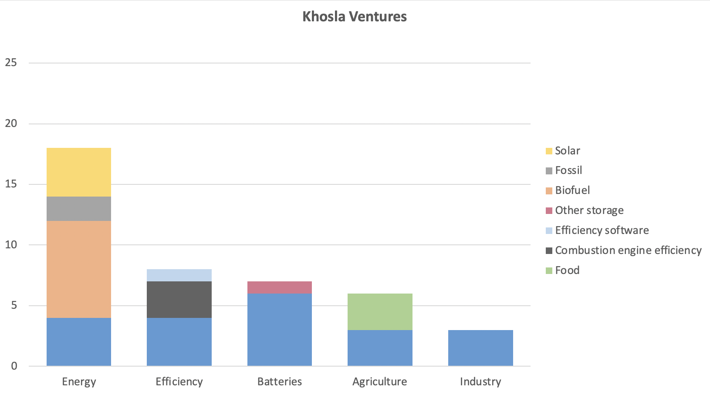
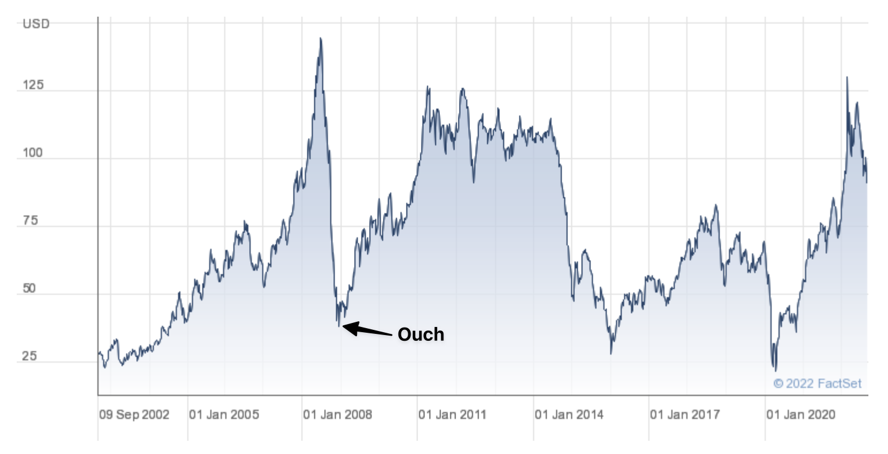
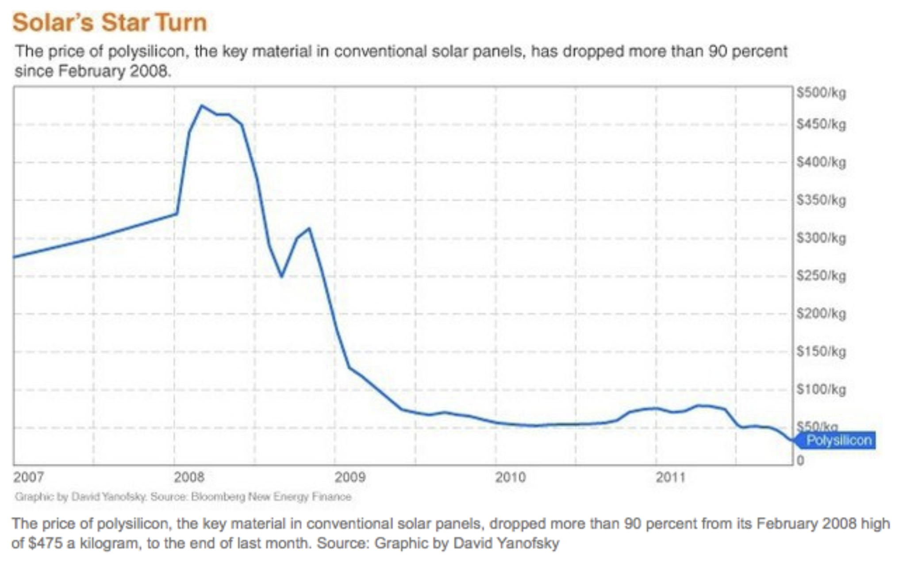

The past, present, and future of climate investing
Part 2 - losers and lessons
By Neil Hacker
The first climate tech boom was actually more of a clean tech boom. These obviously sound very similar but if you look at the type of things getting funded there are major differences. The clean tech boom was actually mostly focused around creating green alternatives to fossil fuel energy, so basically things like solar, wind, biofuels and batteries.
Why did people bet big on climate? John Doerr of Kleiner Perkins was one of the VCs at the forefront of cleantech investing in the first wave. He gave three main trends driving their greentech agenda.
First, urbanization is the largest trend on the planet. Four billion people will move into megacities in the next 50 years, and they all want green transportation, water, and energy. Second, climate change and global warming are accelerating at alarming rates. And third, we are addicted to oil, funding both sides of the war on terrorists, weakening democracy and our economy and damaging the environment
Just to focus on those, more people are going to want to consume green goods and services, there is a moral imperative to making these available and oil is bad. To me these seem … weak. More people are going to want green goods and services is a bet on large scale consumer preference changes. It is a different story if those goods are actually better in some way but otherwise you get into the second point. Climate change is bad but you are not going to get rewarded as an investor just for investing in virtuous things. The last point about oil I think is actually kind of reasonable just not for the reason Doerr describes.
To be fair to Doerr this was given at an event and certainly sounds uplifting and much more inspiring than my reinterpretation of the actual trends being bet on.
- Commodity prices are currently high. Oil is forecasted to get to ＄200 a barral, natural gas has gotten almost 100% more expensive over the last few years.
- Polysilicion is very expensive so traditional types of solar panels look like they might struggle to compete. (Price of silicon for normal panels went from ＄50/kg in 2004 to ＄300 in 2008 - at this price Copper Indium Gallium Selenide (CIGS) panels could compete)
- Big energy users are going to start wanting a greener supply of power, if only because the government is going to incentivise them to want this.
- Scaling capital has become much cheaper through various government tax credits, grants and loans.
- There is a narrative part to all this though where making money in this way will probably feel really good and you might well expect a lot of people to get on board with trying to make this all happen.
So with all this in mind VCs ramped up their funding and by 2008 were puting billions into cleantech and this did not go terribly well.
Portfolios
I’ve gone sleuthing and come up with as comprehensive a list as I can for these funds investments from 2005-2012 which I’ve aggregated in these charts. One disclaimer here is that the chart above only represents the number of investments in each category, not the amount of capital deployed. For example, the transport category for Kleiner Perkins has Fisker which is probably one of the companies they put the most money into but only counts for one entry in the graph above. Still we see some clear trends
Kleiner Perkins and Khosla Ventures were two of the main investors in the first boom cleantech and so we can learn a lot from their climate portfolio


It is really hard to overstate how much of this wave, in terms of the number of investments and the total dollars, was about trying to get new forms of energy and storage. This makes a lot of sense, the wave today is largely about using abundant green energy but in the 2006-12 time period the problem wasn’t using it, it was making it.
If you include batteries around 60% of all investments went into this category which is one with very different characteristics to the usual types of investments venture makes, which we’ll talk more about below.
One interesting difference between these investors was their view on transportation, Kleiner Perkins bet big on electric vehicles with companies like Fisker, into which they poured vast sums of money. Khosla Ventures however didn’t make a single EV investment, instead they bet on making current combustion engines more efficient and went very heavily into biofuels. In the end neither of these bets really worked out, Kleiner largely bet on the wrong EV companies and Khosla’s bet on the permanence of the internal combustion engine didn’t pan out.
Simply put this was an era of investing in companies that would need significant follow on capital to scale before they were technologically derisked. In fact most of the companies above are ones that very directly have to scale things in the physical world, sectors that weren’t straight up energy include industry and agriculture, not ones typically known for their software like scaling abilities.
This is not at all to say VCs should shy away from these kinds of sectors, many of the most successful startups came from areas like these, they just present intense challenges that are often very different from the kinds VCs deal with. Your time horizons are long and companies will often need a lot of follow-on financing which will either dilute you or expose you to higher levels of risk. These factors all contributed to a period of pretty abysmal returns but what were the larger trends driving the bursting of this boom?
Solar - the story of Solyndra
While not in the Kleiner Perkins portfolio, if you're writing about the first climate tech boom it is pretty difficult to not mention Solyndra, the widely derided poster child for government winner-picking gone wrong.
On the surface Solyndra wasn’t actually as crazy as it’s been reported. They were pushing two distinct bets. Firstly, that polysilicon would stay expensive so moving to a solar module that was built with CIGS made economic sense. Secondly, they realised installation costs were a huge burden on the end price so they made their modules as cylinders. This did two things, it reduced the pressure winds placed on the panels meaning they could be installed in more places and it made the install process easier, and hence cheaper. The cylindrical design was meant to allow it to collect sunlight reflected off of the roof it was installed on at all times of the day.
Making two fundamentally different bets, material science and installation costs, was certainly ambitious and there were reasons to think that it might not work out. However, a huge reason for the company failing was, as we will see below, polysilicon falling immensely in price while China flooded the market with panels using the material.
The main bet Solyndra made was that polysilicon was a scarce resource that you should try to utilise in the absolute most efficient way possible. This assumption broke. Now, Solyndra as a company did have some other issues about disclosures and how it was meeting production targets but these were largely divorced from the central bet that polysilicon was scarce.
The fall out though was immense, private investors lost close to ＄1bn, the DoE loan office lost around ＄500m and was basically closed for almost a decade. Republicans held Solyndra up as the sign of all that was wrong with government intervention in private markets, corruption, ineptitude, waste.
Some of these accusations, like corruption, basically don’t hold water, others like waste are a bit more nuanced. The government spent, and lost, a lot of money on Solyndra but this was the exact same loan office that funded, and kept alive, Tesla. If you’re looking at the loan offices portfolio as a whole they did really pretty well but the media is less likely to discuss things in terms of portfolios and more about salient examples, of which solyndra was a painfully good target.
It’s difficult to know exactly what the fallout from this was as a lot of the effects would have been of the unseen variety, companies that stayed smaller than they otherwise would have or were not started because of the hostile funding environment this event helped usher in. What if Tesla wasn’t in a position to ask for a loan until a year later than it did when the fall out from Solyndra was in full swing, could that have been the nail in the coffin for it as a company? It seems like the answer really is yes.
One further lesson we can see from the Solyndra story is the power of narrative in investing and company formation. Especially in areas such as climate where the narrative for funding or building companies in the area is often built upon seeing it as a way to make progress towards some higher goal. I do want to emphasise that for a lot of people this is not the main reason, the main reason is money, and I personally think that’s absolutely fine. But large, visible, failures can have very wide ranging shockwaves in this space and be a source of extra risk.
Biofuels
Biofuels were one of the other major sectors to get funding in the first boom and things did not go great here either. On the face of it there really are reasons to want biofuels to work and even to invest in them. Oil was expensive and having a drop in fuel, that is one that can work with existing combustion systems, that is better for the environment could be a big win and a big market. There were a few issues with this, biofuels didn’t scale well and their environmental credentials are actually more questionable than you might assume.
We’ll get to scale but why are biofuels not as green as they sound? To be clear it does somewhat depend on how you source your feedstock for the biofuels, if you use only waste biomass then you can alleviate this problem but then you constrain yourself by how much availability there is. If you don’t use waste biomass, then that means growing stuff and growing stuff means land use.
The issue is that biofuels are simply not that efficient and so you need a very large land area to grow them, which causes problems. You are either diverting land use that was for food or could be used for renewables or covering land that wasn’t already being used industrially with new crops. To put the stark efficiencies out there biofuels are perhaps 100 times less efficient per unit of land than solar panels, and you have associated issues with fertiliser and water usage. One 2022 paper actually found that “the carbon intensity of corn ethanol produced under the RFS [Renewable Fuel Standard] is no less than gasoline and likely at least 24% higher”.
For investors though biofuels had another problem, they just didn’t scale enough. One way to think about this is from the point of view of who would want to use biofuels. The answer, at the time, could have been any user of hydrocarbon based liquid fuels, so mainly cars, trucks, agricultural vehicles, and planes. Two of these, cars and planes, could have been very large markets but two issues arose. Firstly, biofuels for cars as an investment thesis only make sense if cars don’t go electric, at the time this may have looked less certain but you were betting on this transition being either slow or virtually non existent. Planes are less likely to suffer from this issue as making electric planes is much more difficult than electric cars. However, biofuels have another weakness, they are less energy dense than normal fossil fuels and so you can only use them in low percentages mixtures alongside more traditional fuels. Some companies are doing this but you are competing in a commodity market where you can never get above a 15% or so market share for fuel content.
From a company standpoint then you had to basically invent a new way to make fuels, scale it up through massive CAPEX expenditure at the same time that the demand for your product was likely to be falling due to electrification of cars and your potential profits were being squeezed from falling oil prices. The future of biofuels is not necessarily terrible, if you use waste biomass or closed systems like algae farms the environmental issues can be lowered and long haul trucking and aviation still look like they might need biofuels to go green but the challenges will remain nonetheless.
Why did it burst?
There were company specific issues but there were also some broad trends that broke the fortunes of investors.
Cheaper fossil fuels
As I mentioned above oil was expected to get to ＄200 a barral, this didn’t happen. The price of Brent crude fell from a peak of around ＄140 in Jun 2008 to ＄46 and has still never got back to that high point.

A similar story happened with natural gas which peaked at ＄13 per thousand cubic feet but then fell to around ＄3 with the advent of fracking.
At the original price points you were looking at an environment where renewables of various kinds had clear and near pathways to becoming the more economical option. With the price declines investing in companies that made commodity outputs became tough.
The financial crisis
Things did not go great for anyone in 2008. Credit became much more scarce and CAPEX heavy cleantech found it much more difficult to finance loans and get project financing.
A contraction in the public markets also made incumbents less acquisitive and up and coming companies found it harder to IPO at attractive levels. All of this combined so that financing continued growth became more expensive and exit opportunities fell.
Chinese solar
While VCs were putting over ＄4bn into cleantech the Chinese government had more than ＄15bn in subsidies. These were also capacity based so the firms that grew the fastest could get even more benefit out of them. Coupled with China having much lower labour costs and better knowledge of scaling up manufacturing and they quickly came to absolutely dominate solar manufacturing.
If you look at when the cleantech boom started in around 2005 the price of a solar PV module was around ＄4.24/W or around 13% below where it was five years earlier. But in the next five years the price fell by around 52% down to ＄2.04/W. The price declines the industry saw blew away all expectations and made what might have been reasonable bets, costly losses.

Polysilicon fell down to around ＄30/kg and Chinese firms flooded the market making the old style of panels. Companies trying more novel technologies like CIGS, whose premise was that polysilicon was a scarce resource that should be conserved simply never got the time to de-risk the tech before the market price had fallen below where they could hope to catch up to.
This change in which design blew out most of the US VC bets. We’re actually somewhat lucky this didn’t happen a year earlier as this was one of the biggest trends that contributed to the infamous Solyndra bankruptcy. Solyndra was trying to do two things, firstly use different materials that could compete on cost if traditional materials stayed at their high prices. Secondly, they tried a different shape (cylindrical) which was meant to make installation much easier as they weren’t as affected by wind and they received sun at all times of day. (They did also make some actually false claims). If this had happened earlier the government loan office would probably have never given Tesla an almost ＄500m loan and the EV market would probably have been delayed years.
Why did VCs struggle so much?
VC did not do well here. We can see that a number of forces came together all acting against their thesis but it can still be useful to ask specifically why VCs fared so badly.
Many of the companies VCs invested in ended up being in the wrong part of the value chain. They weren’t vertically integrated enough so they only got hurt by things like falling solar prices rather than being able to take advantage of it.
Some companies avoided this issue by being more vertically integrated. Tesla is the classic example, if there was an advancement in battery tech, Tesla benefitted, charger tech, Tesla benefited, cheaper renewables, Tesla benefited. Other companies like Solarcity put themselves higher up the value chain by financing and installing solar panels not producing them and this approach served them well.
Solar, batteries and biofuels were compared with other capital intensive areas like semiconductors or biotech but this didn’t end up being a good model. There are a few reasons for this, firstly those other industries have incumbents who are much more happy to acquire up and coming companies, leading to better exit opportunities. Secondly, quality matters in those sectors. If you genuinely make a better drug or semiconductor that is a giant moat, if you make the best solar panels you still have to hope fossil fuels don’t fall majorly in price.
Many VCs got caught up in the narrative of the “moral imperative” of these kinds of investments and were potentially more blind to the large amounts of government money also going in making many companies look better than they might have. The US was pumping money into these sectors so in some sense it looked like there would be clear demand there if they worked, China though was pumping even more money into these sectors and had a comparative advantage when it came to manufacturing at scale. You can get around some technical risk worries if the government is sweetening the pot but you’re much more at risk if someone swoops in with actually better technology. This is not an anti-government point as I’ll make a bit more clear below
The VC model relies on scalability, rapidly growing markets and exits. In lots of areas the companies required just massive amounts of capital before you could even know if you’d overcome certain technology risks.
Firms like Fisker (EVs), A123 (batteries), and ECOtality (solar) needed an average of a quarter of a billion dollars in investment just to get their products to market. These huge costs means that if VCs want to own a meaningful amount of these companies should the become successful they have to put in large amounts of their fund before they are even sure if the company will have a working product.
Lessons
Govt involvement was crucial
The federal loan guarantee program that got started in 2005 lent out more than ＄16bn over 28 projects. These included absolute stand out companies like Tesla. This was specifically tasked with helping these companies overcome the valley of death which new entrants often face as they try to scale but still have technology risk.
If you’re a VC in cleantech you will almost certainly need government assistance at some point and it is worth being pretty knowledgeable about what that landscape looks like, in this first wave despite the DoE loans office starting to get off the ground follow-on financing was much harder to come by than it is today.
Government subsidies obscured market signals
Government subsidies are a tricky double edged sword here, on the one hand companies like Tesla would straight up not exist without the ＄500m loan it got. On the other hand large scale government subsidies can obscure market signals about which technologies will be able to stand on their feet long term. For example, biofuels received huge support but in the end were not a cost competitive product for most uses.
This is absolutely not a critique of the form governments shouldn’t get involved here. It is more of a warning specifically around the VC stage that you need to be very cautious about whether you are backing something that just needs a little government support at some stage but can then prosper or if it will always be dependent on government subsidies to survive.
Commodity markets are hard
If you don’t hit your technical milestones you don’t end up with a smaller market share you end up with no market share. This may be true in other VC backed areas as well but typically you can fail faster and cheaper. Needing ＄X00m to scale up factories as you are still trying to overcome technical risk is a very tricky thing to do.
If you are going to compete in a commodity market then operations and scaling will be just as important as any technological breakthrough.
Timescales and capital requirements were large
Normal VC timeline of 3-5 year returns won’t work and as mentioned above you need high conviction on the team and technology because you might well be putting a lot of money in there before you see returns. Many of the battery companies backed have taken close to a decade before even having a product. This is not necessarily bad for VCs, as long as the investment is getting marked up their IRR will still be impressive but it does add significant risks.
You have to be weary of competition from outside climatetech but also within
In lots of traditional VC investments (SAAS for example) the US is the best capital market in the world for that so if you are backing the best companies there there is a decent chance you have the best in the world. SAAS is not a strategic priority though, for many countries cleantech, or at least decarbonisation, is. If you have huge industrial players like China coming in you have to consider if your companies will be able to survive the might of one of their five year plans.